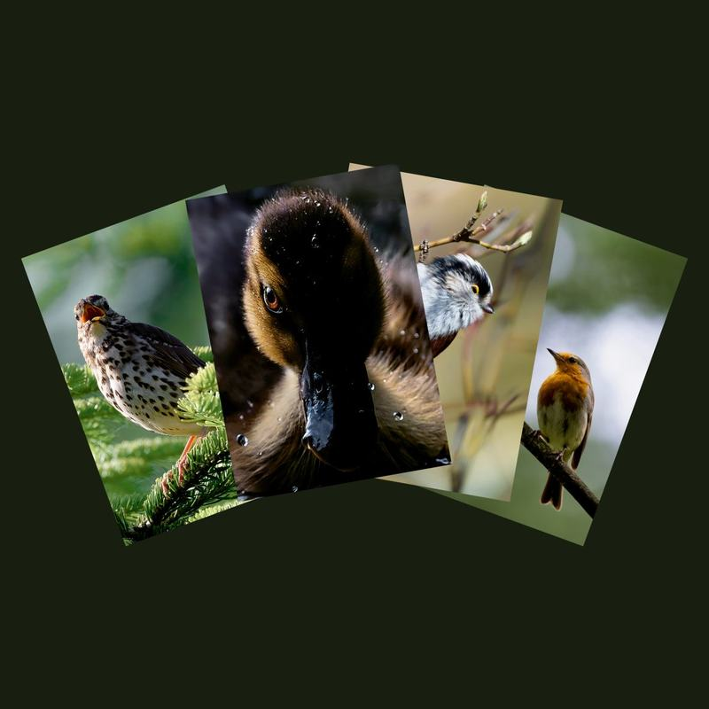
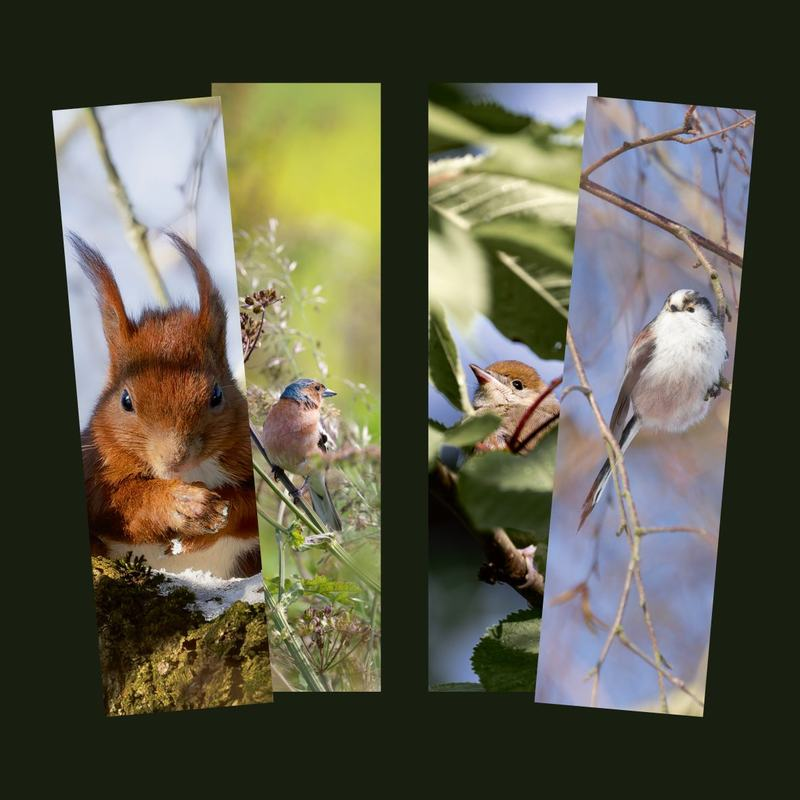
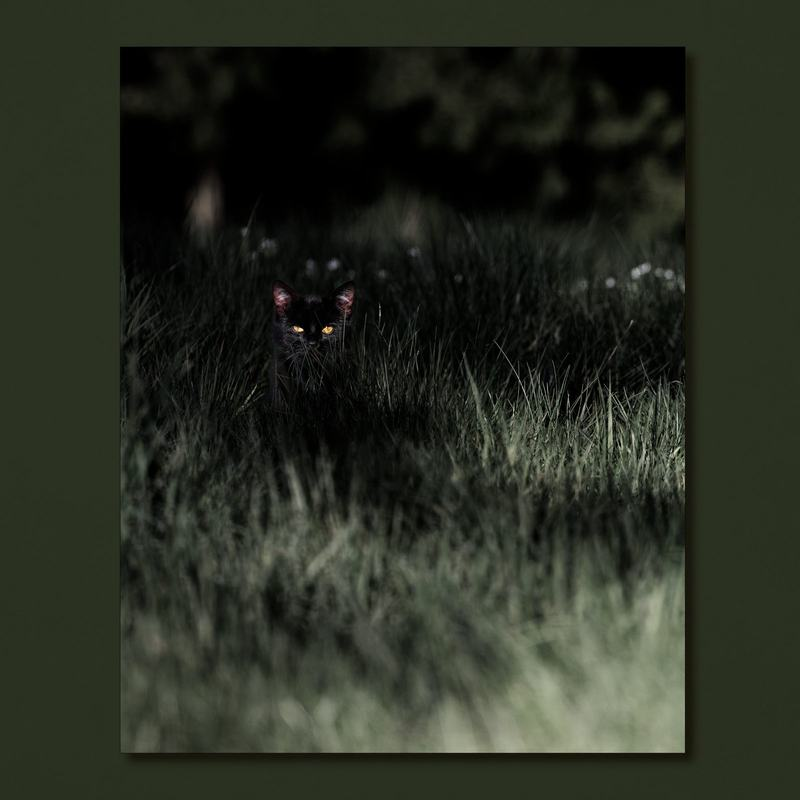

Benedict Gertz · BG Naturfotografie
Ich fotografiere heimische Vögel und Wildtiere in Halstenbek und Umgebung. Aus meinen Aufnahmen gestalte ich Postkarten, Lesezeichen und A4-Drucke. Fotografie, Bearbeitung, Gestaltung und Texte stammen vollständig von mir. Nur den Druck übernehmen spezialisierte Druckereien.

Mein Name ist Benedict Gertz, und unter dem Namen BG Naturfotografie zeige ich die Natur direkt vor der Haustür. Ich fotografiere in Gärten, an Teichen und in den Wäldern zwischen Pinneberg und dem Hamburger Westen. Mich reizt nicht die Ferne, sondern das Alltägliche: Rotkehlchen, Schwanzmeisen, Enten und Eichhörnchen, die man selbst am nächsten Morgen wiederfinden kann.
Zu vielen Motiven schreibe ich die Geschichte auf, wie das Foto entstanden ist. Über einen QR-Code auf dem Lesezeichen lässt sie sich direkt nachlesen. So wird aus einer Karte ein kleiner Moment, den man weitergeben kann.
Jedes Produkt durchläuft sechs Schritte. Fünf davon erledige ich selbst. Für den Druck arbeite ich mit Druckereien zusammen, deren Qualität ich für meine Motive ausgewählt habe.
Ich bin viel draußen unterwegs und fotografiere, was mir spontan begegnet. Jeden Tag freue ich mich darüber, was ungeplant vor meine Kamera kommt.
Auswahl, Farbe, Licht und Zuschnitt bearbeite ich jedes Bild einzeln.
Ich bringe jedes Motiv in Form, von der Postkarte bis zum Lesezeichen.
Artname, Fundort und die Geschichte zum Foto schreibe ich selbst.
Gedruckt wird bei WIRmachenDRUCK, Saal Digital und Peterprint.
Ich prüfe, verpacke und verschicke jede Bestellung selbst aus Halstenbek.
Alle Produkte gibt es mit Motiven aus meinen vier Serien. Gestaltung und Texte sind jeweils auf das Format abgestimmt.
10 × 15 cm, 350 g, matt
Auf der Rückseite stehen Artname und Fundort, damit man weiß, wen und wo man sieht.
Im Shop ab 1,80 €

5 × 18 cm, 400 g, matt kaschiert
Ein QR-Code führt direkt zur Geschichte hinter dem Foto. Die Ecken sind abgerundet.
Im Shop ab 1,80 €

Fotoabzug, matt, ohne Rahmen
Die Drucke passen in jeden handelsüblichen A4-Rahmen. Größere Formate sind auf Anfrage möglich.
Im Shop ab 7,50 €
In Vorbereitung: Klappkarten mit Umschlag, die innen Platz für eigene Worte lassen.
Teichleben, Gartenleben und Waldleben zeigen die Natur vor der Haustür. Die Serie Reduktion ist bewusst grafisch gestaltet und konzentriert sich auf Silhouette, Fläche und Farbe.
Ich freue mich über Ihre Nachricht und beantworte gern alle Fragen zu meinen Motiven und Produkten.